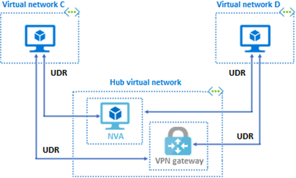

Virtual network peering is nontransitive. The communication capabilities in a peering are available to only the virtual networks and resources in the peering. Other mechanisms have to be used to enable traffic to and from resources and networks outside the private peering network.
Suppose you have three virtual networks: A, B, and C. You establish virtual network peering between networks A and B, and also between networks B and C. You don't set up peering between networks A and C. The virtual network peering capabilities that you set up between networks B and C don't automatically enable peering communication capabilities between networks A and C.
Things to know about extending peering
There are a few ways to extend the capabilities of your peering for resources and virtual networks outside your peering network.
| Mechanism | Description |
|---|---|
| Hub and spoke network | When you deploy a hub-and-spoke network, the hub virtual network can host infrastructure components like a network virtual appliance (NVA) or Azure VPN gateway. All the spoke virtual networks can then peer with the hub virtual network. Traffic can flow through NVAs or VPN gateways in the hub virtual network. |
| User-defined route (UDR) | Virtual network peering enables the next hop in a user-defined route to be the IP address of a virtual machine in the peered virtual network, or a VPN gateway. |
| Service chaining | Service chaining is used to direct traffic from one virtual network to a virtual appliance or gateway. To enable service chaining, configure UDRs that point to virtual machines in peered virtual networks as the next hop IP address. UDRs could also point to virtual network gateways to enable service chaining. |
The following diagram shows a hub and spoke virtual network with an NVA and VPN gateway. The hub and spoke network is accessible to other virtual networks via user-defined routes and service chaining.
